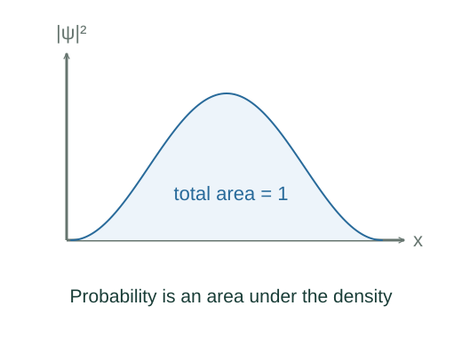
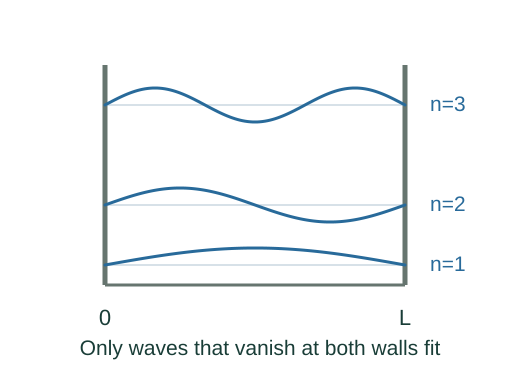

Derive wavefunction normalization and multidimensional box states
Quantum mechanics supplies |ψ|² as probability density. Total probability one imposes normalization; probabilities on subregions follow by integrating that density.
What the symbols mean
ψ: spatial state; |ψ|²: probability density by the Born rule; n: positive box mode integer; P(r): radial probability density.
When this applies
Born probability rule, infinite rectangular walls for the separated box states, and normalized angular states for radial probability.
Developing the argument

State the probability rule
Quantum mechanics supplies |ψ|² as probability density. Total probability one imposes normalization; probabilities on subregions follow by integrating that density.
Normalize a one-dimensional box mode
For ψ = A sin(nπx/L), the sine squared integrates to L/2 for positive integer n. Solve |A|²L/2 = 1.

Separate independent directions
The rectangular Hamiltonian is Hx + Hy and its eigenfunction can be a product X(x)Y(y). Normalization factors multiply while the energy eigenvalues add.
Count spherical shell probability
With ψ = R(r)Y(θ,φ) and normalized Y, volume measure r²dr dΩ gives radial density r²|R(r)|².
A worked example
The normalized first box state has probability 1/2 in either half of the symmetric well.
Derivation behind this calculation ↗A point to keep straight
ψ itself is not a probability density. For complex wavefunctions use |ψ|², not ψ².
Check the assumptions and derivation ↗